측량및지형공간정보기사 (2013-03-10 기출문제)
1과목: 측지학 및 위성측위시스템
1. UTM 좌표에 대한 설명으로 옳지 않은 것은?
- UTM 좌표는 경도를 6°간격으로 분할하여 사용한다.
- UTM 좌표는 적도를 횡축으로, 측지선을 종축으로 한다.
- 80°N과 80°S간 전 지역의 지도는 UTM 좌표로 표시할 수 있다.
- UTM 좌표는 세계 제2차 대전 말기 연합군의 군사용 좌표로 고안된 것이다.
(정답률: 69%)

2. 중력이상의 주된 원인에 대한 설명으로 옳은 것은?
- 지하에 물질밀도가 고르게 분포되어 있지 않다.
- 대기의 분포가 수시로 변화되고 있다.
- 태양과 달의 인력이 작용한다.
- 화산의 폭발이 있다.
(정답률: 83%)
3. 균시차를 바르게 표시한 것은?
- 균시차 = 세계시 - 태양시
- 균시차 = 평균태양시 - 표준시
- 균시차 = 시태양시 - 평균태양시
- 균시차 = 항성시 - 세계시
(정답률: 72%)
4. 다음 중 모호정수(ambiguity)를 제거하기 위한 GPS 측위 관측신호는?
- 차분되지 않은 반송파
- 단일차분된 반송파
- 이중차분된 방송파
- 삼중차분된 반송파
(정답률: 74%)
5. GPS 측량의 특징에 대한 설명으로 옳지 않은 것은?
- 밤낮에 관계없이 측량이 가능하다.
- 기상에 관계없이 측량이 가능하다.
- 실시간 위치 결정이 가능하다.
- 직접적인 실내측위가 가능하다.
(정답률: 75%)
6. 중력값이 지구상의 지점에 따라 차이가 나는 원인이나 현상에 대한 설명으로 옳지 않은 것은?
- 위도에 따라 원심력이 다르다.
- 위도에 따라 중력의 크기가 다르다.
- 높은 산위의 관측점에서는 중력이 크다.
- 관측점 지하의 밀도가 크면 중력이 크다.
(정답률: 71%)
7. 측위지도에 대한 설명 중 옳은 것은?
- 지구상 한 점에서 물리적 지표면에 대한 법선이 적도면과 이루는 각
- 지구상 한 점에서 타원체에 대한 법선이 적도면과 이루는 각
- 지구상 한 점에서 지오이드에 대한 연직선이 적도면과 이루는 각
- 지구상 한 점과 지구중심을 맺는 직선이 적도면과 이루는 각
(정답률: 60%)
8. GPS로부터 획득할 수 있는 정보와 가장 거리가 먼 것은?
- 공간상 한 점의 의치
- 지각의 변동
- 해수면의 온도
- 정확한 시간
(정답률: 83%)
9. 특정 지점의 지오이드고가 -20m이고 타원체고가 20m일 때 정표고는? (단, 연직선편차는 0으로 가정한다.)
- 0m
- -40m
- 40m
- -400m
(정답률: 75%)
10. GPS의 상대측위법에서 단일차분(single difference)을 두 번 반복하는 2중차분(double difference) 과정에서 소거되지 않는 오차는?
- 다중파장경로 오차
- 위성 시계 오차
- 수신기 시계 오차
- 정수 바이어스
(정답률: 64%)
11. GPS 측량을 통해 수집된 공통 데이터 형식인 RINEX 파일에 포함되지 않는 사항은?
- 관측데이터
- 항법메시지
- 기상관측자료
- 측량작업자
(정답률: 75%)
12. 지자기 측량에 대한 설명으로 틀린 것은?
- 지자기 측량은 지하 물질의 자성의 차이를 이용한다.
- 편각이란 수평분력과 자북이 이루는 각이다.
- 복각이란 전자(기)장과 수평분력 사이의 각이다.
- 지자기 이상이란 지구의 자장과 거의 일치하는 쌍극자를 지구 중심에 놓은 상태와 실측과의 차이를 말한다.
(정답률: 56%)
13. GPS 단독측위에서의 정확도와 관련된 설명 중 틀린 것은?
- 대류권의 수증기 양이 적을수록 정확도가 높다.
- 전리층의 전하량이 적을수록 정확도가 높다.
- 위성의 궤도가 정확할수록 정확도가 높다.
- 위성의 배치가 천정방향에 집중될수록 정확도가 높다.
(정답률: 75%)
14. GPS에 의한 기준점 측량 작업규정에 의해 GPS 관측을 실시할 경우에 대한 설명으로 옳지 않은 것은?
- GPS 측량은 Session 모두 정적간섭측위방법으로 실시한다.
- 위성 고도각은 15°이상의 것을 사용한다.
- 위성의 작동상태가 정상적인 것을 사용한다.
- 동시 수신 위성수는 최소 6개 이상이 되도록 한다.
(정답률: 82%)
15. 자기 폭풍의 주요 원인에 대한 설명으로 옳은 것은?
- 달의 공전
- 태양면의 폭발
- 해양 지각 변동
- 지구 내부 물질의 분포
(정답률: 69%)
16. GPS 위성으로부터의 신호가 어떠한 오차도 포함되어 있지 않고, 수신기의 시계도 오차가 없다면, 3차원 위치결정을 위하여 최소한 몇 개의 GPS위성으로부터의 신호가 필요한가?
- 3개
- 4개
- 5개
- 6개
(정답률: 57%)
17. GPS에서 이중주파수(dual frequency)를 채택하고 있는 가장 큰 이유는?
- 다중경로(multipath)오차를 제거할 수 있다.
- 전리층지연 효과를 제거할 수 있다.
- 대기 온도의 영향을 제거할 수 있다.
- 전파방해에 대응할 수 있다.
(정답률: 72%)
18. 지구의 형상을 표현하는 지오이드(Geoid)에 대한 설명으로 옳지 않은 것은?
- 중력값에 영향을 받는다.
- 기하학적으로 정의할 수 있다.
- 지하물질의 종류에 영향을 받는다.
- 시간에 따라 변화한다.
(정답률: 57%)
19. 타원체의 장반경이 6378137m, 단반경이 6356752m라고 가정한 경우 편평률(flattening)은?
- 0.003353
- 0.003364
- 298.25
- 297.25
(정답률: 63%)
20. 다은 중 물리학적 측지학에 속하지 않은 것은?
- 지구의 형상 및 크기 결정
- 중력측정
- 시각의 결정
- 지구내부 물질조사
(정답률: 73%)
2과목: 응용측량
21. 삼각형의 면적을 구하기 위하여 두변의 길이를 측정한 결과, 길이가 30m, 20m이고 그 사이에 낀 각이 120°이였다면 삼각형의 면적은?
- 259.81m2
- 300.00m2
- 400.81m2
- 519.62m2
(정답률: 46%)
22. 세 꼭지점의 평면좌표가 표와 같은 삼각형의 면적을 3:2로 분할하는 점 M의 좌표는?
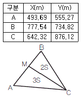
- X=666.0m, Y=665.0m
- X=664.0m, Y=663.0m
- X=662.0m, Y=661.0m
- X=666.0m, Y=659.0m
(정답률: 39%)
23. 유속계로 1회 관측시 회전수(N)가 2.6일 때 유속(V)이 0.90m/sec 이었고, 2회 관측시 회전수(N)가 3.8일 때 유속(V)이 1 20m/sec이었다. 유속계의 상수 a, b는 얼마인가? (단, V=aN+b)
- V = 0.25N + 0.25
- V = 0.35N + 0.35
- V = 0.25N + 0.45
- V = 0.35N + 0.55
(정답률: 44%)
24. 교각이 60°일 때 교점(I, P)으로부터 원곡선의 중점까지 거리(E)를 30m로 하는 곡선의 곡선반지름은?
- 115.7m
- 70.6m
- 193.9m
- 94.1m
(정답률: 45%)
25. 현편거법에 의하여 터널 내 곡선설치를 할 때
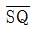
의 크기는?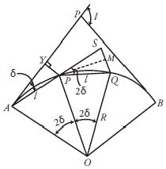
- 2l2/R
- l2/R
- l2/2R
- l/R
(정답률: 39%)
26. 하천측량에서 수애선(水涯線)의 측량에 대한 설명으로 틀린 것은?
- 수면과 하안(河岸)과의 경계선을 수애선이라 한다.
- 심천측량에 의한 방법을 이용할 때에는 수위의 변화가 적은 시기에 심천측량을 행하여 하천의 횡단면도를 작성한다.
- 수애선의 측량에는 심천측량에 의한 방법과 동시관측에 의한 방법이 있다.
- 수애선은 하천 수위에 따라 변동하는 것으로 갈수위에 의하여 정해진다.
(정답률: 54%)
27. 교각이 50°30〞이고 곡선반지름이 300m일 때 단곡선을 중앙종거에 의하여 설치하고자 한다. 세 번째 중앙종거 M3는?
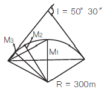
- 28.663m
- 7.254m
- 1.819m
- 0.456m
(정답률: 38%)
28. 완화곡선에 대한 설명으로 옳지 않은 것은?
- 완화곡선의 반지름은 완화곡선의 시점에서 무한대, 종점에서 원곡선의 반지름®으로 된다.
- 완화곡선의 접선은 시점에서 곡선에, 종점에서 직선에 접한다.
- 완화곡선에 연한 곡선 반지름의 감소율은 캔트의 증가율과 같다.
- 종점에 있는 캔트(cant)는 원곡선의 캔트(cant)와 같게 된다.
(정답률: 36%)
29. 수로측량의 한 종류로서 수로조사 성과심사의 대상에 해당되는 측량은?
- 터널측량
- 지적측량
- 해안선측량
- 노선측량
(정답률: 54%)
30. 해양조사선의 수평위치결정방법이 아닌 것은?
- 육분의에 의한 방법
- 전파측위법
- 인공위성(DGPS) 측위법
- 음향측심의에 의한 방법
(정답률: 40%)
31. 면적계산방법 중 도상거리법에 속하지 않는 것은?
- 삼사법
- 방한법
- 지거법
- 삼변법
(정답률: 48%)
32. 지하시설물측량의 일반적인 절차로 옳은 것은?
- 작업계획 및 준비 - 시설물의 위치측량 - 조사 - 탐사 - 지하시설물 원도 작성
- 작업계획 및 준비 - 조사 - 탐사 - 시설물의 위치측량 - 지하시설물 원도 작성
- 조사 - 작업계획 및 준비 - 탐사 - 시설물의 위치측량 - 지하시설물 원도 작성
- 조사 - 탐사 - 작업계획 및 준비 - 시설물의 위치측량 - 지하시설물 원도 작성
(정답률: 50%)
33. 터널 내외 연결측량에 대한 설명으로 옳지 않은 것은?
- 수직터널이 낮고 단면이 큰 경우에는 광학적인 방법을 이용하여 층분한 정확도를 얻을 수 있다.
- 터널 내외의 측점 위치관계를 명확하게 하기 위한 목적으로 실시한다.
- 지하의 터널과 지상의 구역경계 및 중요 제점과 어떤 관계가 있는가를 조사하기 위한 측량이다.
- 수직터널이 한 개인 경우 수직터널에 한 개의 수선을 내리고 이 수선의 길이와 방위를 관측한다.
(정답률: 48%)
34. 터널 내에서 내접다각형법에 의한 곡선을 설치할 때 측선의 길이는? (단, 곡선반지름 R=400m, 굴착 후 터널 폭은 6m임)
- 48.99m
- 89.58m
- 97.80m
- 149.77m
(정답률: 33%)
35. 설계속도 65㎞/h, 곡선반지름 550m인 곡선을 설계할 때, 필요한 편경사는?
- 6%
- 5%
- 4%
- 3%
(정답률: 39%)
36. 토량계산 공식에서 양단면의 면적차가 클 때 공식의 특징에 따른 토량의 관계로 옳은 것은? (단, 양단면 평균법 = A, 중앙단면법 = B, 각주공식 = C)
- A = C < B
- A < C < B
- A = B = C
- B < C < A
(정답률: 44%)
37. 종단곡선의 설치에서 상향기울기가 5/1000, 하향기울기가 30/1000, 반지름 2000m인 원곡선을 설치할 때 교점에서 곡선시점까지의 거리는?
- 35m
- 55m
- 60m
- 65m
(정답률: 34%)
38. 하천측량의 수위관측에서 양수표에 대한 설명으로 옳지 않은 것은?
- 영(0) 눈금은 최저수위보다 높다.
- 양수표의 최고수위는 최대 홍수위보다 높다.
- 검조장의 평균해면 표고로 측정한다.
- 홍수 뒤에는 부근 수준점과 연결하여 표고를 확인한다.
(정답률: 42%)
39. A=100m의 클로소이드곡선에서 곡선길이(L) 50m일 때, 곡선반지름(R)은?
- 20m
- 100m
- 150m
- 200m
(정답률: 48%)
40. 어떤 기간 동안의 수위 중 이것보다 높은 수위와 낮은 수위의 관측횟수가 같은 수위를 나타내는 것은?
- 평수위
- 평균수위
- 평균고수위
- 평균저수위
(정답률: 55%)
3과목: 사진측량 및 원격탐사
41. 종중복도 70%, 횡중복도 40% 일 때, 촬영 종기선 길이와 촬영 횡기선 길이의 비는?
- 7 : 4
- 4 : 7
- 2 : 1
- 1 : 2
(정답률: 49%)
42. 60%의 종중복도로 촬영된 5장의 연속된 항공사진에서 가운데(3번째) 사진에 나타나는 종접합점의 최대 갯수는?
- 3점
- 6점
- 9점
- 12점
(정답률: 39%)
43. 해석적 항공삼각측량에 주로 사용되는 방법으로 최소제곱법을 이용하여 각 사진의 외부표정 요소 및 접합점의 최확값을 결정하는 방법은?
- 다항식 조정법
- 독립입체모델법
- 광속조정법
- 기본조정법
(정답률: 50%)
44. 사진의 크기와 촬영고도가 같을 경우, 초점거리 150㎜의 광각카메라에 의한 촬영지역의 면적은 초점거리 210㎜의 보통각 카메라에 의한 촬영지역의 면적의 몇 배가 되는가?
- 약 1배
- 약 2배
- 약 2 3 배
- 약 3배
(정답률: 44%)
45. 항공사진촬영의 과고감에 대한 설명으로 옳지 않은 것은?
- 낮은 촬영고도로 촬영한 사진이 촬영고도가 높은 경우 보다 과고감이 크다.
- 렌즈 초점거리가 짧은 경우의 사진이 긴 경우의 사진보다 과고감이 크다.
- 입체시할 경우 눈의 위치가 높아짐에 따라 과고감이 커진다.
- 촬영기선이 짧은 경우가 촬영기선이 긴 경우보다 과고감이 크다.
(정답률: 39%)
46. 영상레이다(SAR)에 관한 설명으로 옳지 않은 것은?
- SAR은 능동적 센서이다.
- SAR은 구름이 있어도 영상을 취득할 수 있다.
- SAR로 지형의 표고는 구할 수 있지만 지형의 변위는 구하지 못한다.
- SAR 영상의 밝기값에 영향을 주는 요소 중 하나는 지표면의 거칠기이다.
(정답률: 39%)
47. 촬영고도 800m에서 촬영한 연직사진에서 건물의 윗부분이 주점으로부터 75㎜ 떨어져 나타나 있으며, 건물의 기복변위가 7.15㎜ 일 때 건물의 높이는?
- 67.0m
- 76.3m
- 83.9m
- 149.2m
(정답률: 52%)
48. 항공라이다에서 제공하는 데이터가 아닌 것은?
- Laser 펄스가 반사된 지점에 대한 X, Y, Z 좌표값
- Laser 펄스가 반사된 지점의 반사강도
- 대상지역에 대한 Radar 영상
- 반사된 Laser 펄스의 파형
(정답률: 54%)
49. 격자(Raster)형태의 지리정보자료를 기하학적으로 보정하고 재배열하려한다. 재배열방법으로 최근린내삽법을 이용할 경우에 그림에서 x위치의 영상좌표로 역변환된 지리좌표에 할당해야할 픽셀값은?
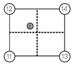
- 11
- 12
- 13
- 14
(정답률: 60%)
50. 인공위성 수치영상을 통해 모양이나 배열의 식별이 가능한 한 화소(Pixel)의 지상면적을 뜻하는 용어로 한 화소의 실제 크기를 의미하는 용어로 옳은 것은?
- 공간 해상도
- 주기 해상도
- 방사 해상도
- 분광 해상도
(정답률: 57%)
51. 다중 해상도 DEM 생성이 가능한 표고점 추출 방법은?
- 격자 표고점 추출
- 동적 표고점 추출
- 무작위 표고점 추출
- 점진적 표고점 추출
(정답률: 50%)
52. 항공사진측량에 사용되는 광각 카메라에 대한 설명으로 옳지 않은 것은?
- 렌즈 피사각이 120°정도이다.
- 초점거리가 152㎜ 정도이다.
- 사진크기가 23㎝×23㎝이다.
- 일반도화 및 판독에 적합하다.
(정답률: 42%)
53. 항공사진측량에서 지상기준점 측량에 대한 설명으로 옳은 것은?
- 도화축척 1/10000 이하의 축적에서의 평면기준점의 표준편차는 ±0.5m 이내이다.
- 기계를 설치할 수 없어서 편심요소를 측정할 경우 편심 거리는 100m 미만으로 제한한다.
- GPS 관측시 데이터수신 간격은 50초 이하로 한다.
- 토탈스테이션을 이용한 연직각 관측시 대회수는 2회로 한다.
(정답률: 38%)
54. 내부표정에서 선형등각사상변환식(linear conformal transformation 또는 similarity transformation)을 사용할 때 계산할 수 없는 것은?
- 사진의 회전
- 사진의 변형
- 사진의 축척
- 사진의 이동
(정답률: 44%)
55. 항공사진촬영을 표와 같이 실시했을 때, 사진 축척이 큰 것부터 순서대로 나열된 것은?
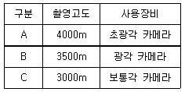
- A, B, C
- A, C, B
- B, C, A
- C, B, A
(정답률: 49%)
56. 2010년 발사한 우리나라 최초의 기상위성 이름으로 옳은 것은?
- 우리별 위성
- 아리랑 위성
- 무궁화 위성
- 천리안 위성
(정답률: 53%)
57. 촬영고도 6350m, 사진(Ⅰ)의 주점기선장 =67㎜, 사진(Ⅱ)의 주점기선장 = 70㎜일 때 시차차 1.37㎜인 댐의 높이는?
- 107m
- 127m
- 137m
- 147m
(정답률: 50%)
58. 항공사진의 판독에 대한 설명으로 옳지 않은 것은?
- 판독의 기초가 되는 것은 지물의 형상, 음영 등이나 반드시 입체시로 해야 한다.
- 사진기의 초점거리, 촬영고도, 축척 등을 조사할 필요가 있다.
- 판독을 확실하게 하려면 대상에 관한 판독자료를 모아야 하며, 대상지방의 특색 등에 관한 지식을 준비하는 것이 좋다.
- 사진의 축척이 클 때 굴뚝, 송전탑 등의 높이는 사진에서의 그림자 길이와 촬영일시 등으로부터 추정되는 태양의 고도로부터 추정이 가능하다.
(정답률: 51%)
59. 수치항공사진 또는 위성영상을 집성(mosaic)할 때 인접부분을 이어붙인 자국이 없이 원래한 장의 사진이었던 것처럼 부드럽고 미려하게 처리하는 작업은?
- 재배열(Resampling)
- 정사보전(Orthorectification)
- 영상 페더링(Feathering)
- 경계정합(Edge matching)
(정답률: 56%)
60. 위성영상 화소 재배열 방식 중 가장 선명하나 시간이 많이 걸리는 단점이 있는 재배열 방식은?
- 최근린 내삽법(Nearest Neighbor)
- 공일차 내삽법(Bilinear Interpolation)
- 공삼차 내삽법(Cubic Convolution)
- 에피폴라 재배열(Epipolar Resampling)
(정답률: 41%)
4과목: 지리정보시스템
61. GIS의 도형자료 중 면형 자료와 가장 거리가 먼 것은?
- 필지 관리용 지적선
- 건물대장 관리용 건물
- 선거집계를 위한 구역선
- 노선 분석용 도로 차선
(정답률: 48%)
62. 다음이 설명하고 있는 것으로 옳은 것은?
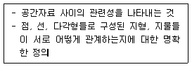
- 계층구조
- 자료구조
- 위상구조
- 벡터구조
(정답률: 44%)
63. 인공위성영상으로부터 벡터구조의 토지이용 분류도를 작성하여 저장하기 위한 순서를 바르게 나타낸 것은?
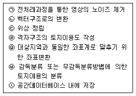
- ㉠ - ㉤ - ㉥ - ㉣ - ㉡ - ㉢ - ㉦
- ㉠ - ㉥ - ㉣ - ㉡ - ㉢ - ㉤ - ㉦
- ㉠ - ㉤ - ㉡ - ㉢ - ㉥ - ㉣ - ㉦
- ㉠ - ㉥ - ㉣ - ㉤ - ㉢ - ㉡ - ㉦
(정답률: 48%)
64. 면 객체를 경계모델(boundary model)의 위상구조로 저장하는 이유가 아닌 것은?
- 저장 구조가 단순하다.
- 자료의 중복이 줄어든다.
- 분석시간이 빨라진다.
- 공간 상호관계가 추가로 저장된다.
(정답률: 47%)
65. 이동통신망이나 GPS 등을 통해 얻은 위치정보를 활용하여 이용자에게 여러 가지 서비스를 제공하는 시스템이나 서비스를 지칭하는 용어로 위치확인, 물류/ 관제, 주변정보 검색 등의 응용서비스를 제공하는 것은?
- CNS
- geoWeb
- gCRM
- LBS
(정답률: 47%)
66. 데이터베이스 디자인 단계의 순서가 옳은 것은?
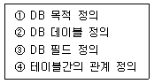
- ① - ② - ③ - ④
- ① - ③ - ② - ④
- ① - ④ - ② - ③
- ① - ④ - ③ - ②
(정답률: 49%)
67. 자료의 표준화에 많이 사용되는 “자료에 대한 자료”를 뜻하는 용어는?
- 검증데이터
- 메타데이터
- 표준데이터
- 메가데이터
(정답률: 63%)
68. DEM과 식생지도를 중첩분석하여 표고에 따른 식생 분포를 분석하고자 한다. 대상지역에서 표고 100m 이상의 지역 중에서 침엽수가 분포하는 지역의 비율은? (단, 픽셀 해상도는 100m이다.)
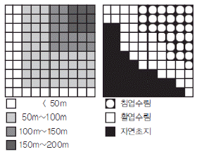
- 100%
- 94%
- 88%
- 82%
(정답률: 53%)
69. 다음과 같이 도시계획 레이어와 행정구역 레이어를 중첩분석하였을 때, 결과 테이블로 옳은 것은?
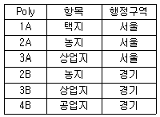
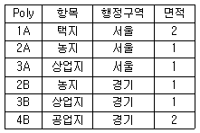
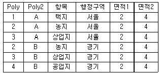
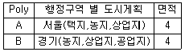
(정답률: 56%)
70. 효율적인 GIS 자료관리와 중복방지를 위해 도입된 데이터베이스관리시스템에 대한 설명으로 옳지 않은 것은?
- R-DBMS : 관계형 데이터베이스 관리시스템
- 00-DBMS : 객체개방형 데이터베이스 관리시스템
- OR-DBMS : 객체관계형 데이터베이스 관리 시스템
- H-DBMS : 계층형 데이터베이스 관리시스템
(정답률: 45%)
71. 데이터 교환을 위해 개발된 포맷이 아닌 것은?
- SDTS
- VPF
- DIGEST
- DLG
(정답률: 35%)
72. 논리연산(AND) 처리후 ① ~ ④의 결과값을 순서대로 바르게 표시한 것은?
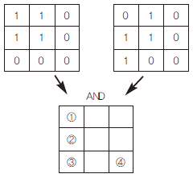
- 1-1-1-0
- 0-1-0-1
- 1-0-1-0
- 0-1-0-0
(정답률: 55%)
73. 지도에 표현되는 도형정보의 내용으로 옳지 않은 것은?
- 지표 활용 등의 속성정보
- 표고 등의 지형정보
- 도로 형상 등의 지리정보
- 시설물 등의 공간좌표
(정답률: 47%)
74. 지리정보시스템의 필요성에 대한 설명으로 옳지 않은 것은?
- 자료중복조사 방지 및 분산관리를 위한 측면
- 행정환경 변화의 수동적 대응을 하기 위한 측면
- 통계담당 부서와 각 전문부서 간의 업무의 유기적 관계를 갖기 위한 측면
- 시간적, 공간적 자료의 부족, 개념 및 기준의 불일치로 인한 신뢰도 저하를 해소하기 위한 측면
(정답률: 50%)
75. SQL(Structured Query Language)의 데이터 조작문(DML)에 해당하지 않는 것은?
- DROP
- UPDATE
- INSERT
- SELECT
(정답률: 60%)
76. 다음 중 GIS의 주요 기능이 아닌 것은?
- 자료처리
- 자료출력
- 자료복원
- 자료관리
(정답률: 50%)
77. 메타 데이터의 역할과 가장 거리가 먼 것은?
- 사용 가능성
- 자료처리 신속성
- 교환 가능성
- 관리 정보
(정답률: 43%)
78. 위성영상에 후추가루를 뿌린 것처럼 불규칙한 잡음(speckle noise)이 발생하여 이를 보정하고자 할 때, 다음 중 가장 적합한 방법은?
- 밴드간 비면산처리
- 공간 필터링
- 히스토그램 확장
- 주성분분석 변환
(정답률: 60%)
79. KLIS의 전국 토지 피복 데이터를 가지고, 서울시 경계데이터를 이용해서 서울시 토지 피복 데이터를 생성하려면 어떤 위상적 중첩 연산자를 사용하여야 하는가?(단, 두 데이터는 벡터기반의 폴리곤 데이터이다.)
- UNION
- INTRESECT
- CLIP
- IDENTIFY
(정답률: 45%)
80. GIS의 공간분석기능에 대한 설명 중 관계가 옳은 것은?
- 버퍼분석(Buffering Analysis)- 표면(surface) 모델링, 유연분석, 경사/향 분석, 가시권분석, 3차원 가시화
- 기하학적분석(Geometrical Analysis)- 영향권분석
- 망분석(Network Analysis)-연결성, 방향성,최단경로, 최적경로의 분석
- 중첩분석(Overlay Analysis)-거리, 면적, 둘레, 길이, 무게중심 등의 정량적 분석
(정답률: 51%)
5과목: 측량학
81. 50m에 대하여 11㎝ 늘어난 줄자로 두 점간의 거리를 관측하여 42.48m의 관측값을 얻었다면 실제 거리는?
- 42.39m
- 42.43m
- 42.57m
- 42.63m
(정답률: 46%)
82. 다각측량에 대한 설명으로 옳지 않은 것은?
- 다각측량은 삼각측량과 같이 높은 정확도를 요하지는 않는다.
- 일반적으로 트래버스 중 결합트래버스의 정확도가 가장 높다.
- 폐합오차 조정시 각 관측의 정도가 거리관측의 정도보다 높으면 컴퍼스 법칙을 적용한다.
- 횡거란 측선의 중점에서 자오선에 내린 수선의 길이이며 그 2배가 배횡거이다.
(정답률: 40%)
83. 지구 상에서 변의 거리가 각각 30㎞, 40㎞, 50㎞인 3각형 ABC의 내각을 오차 없이 실측했을 때 내각의 합은?
- 내각의 합은 180°와 같다.
- 내각의 합은 180°보다 크게 나타난다.
- 내각의 합은 180°보다 작게 나타난다.
- 내각의 합은 위도에 따라 180° 보다 클 수도, 작을 수도 있다.
(정답률: 51%)
84. 그림에서 교각 A, B, C, D의 크기가 다음과 같을 때 cd측선의 역방위각은? (단, A=100°10′, B=89°35′, C=79°15′, D=120°)
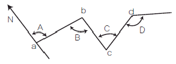
- 00°10′
- 180°10′
- 89°50′
- 269°50′
(정답률: 38%)
85. 수준측량의 결과가 표와 같을 때, No.3의 지반고(G)와 NO.4의 기계고(h)는?
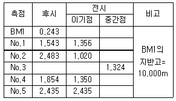
- G = 10.569m, h = 12.397m
- G = 10.569m, h = 12.483m
- G = 9.106m, h = 13.⑤2m
- G = 9.203m, h = 9.⑤2m
(정답률: 37%)
86. 삼각측량에서 각 관측의 오차가 같을 경우, 이 오차가 변의 길이에 미치는 영향에 대한 설명으로 옳은 것은?
- 각이 작을수록 영향이 작다.
- 각이 작을수록 영향이 크다.
- 각의 크기에 관계없이 영향은 일정하다.
- 각의 크기는 변 길이에 아무런 영향이 없다.
(정답률: 42%)
87. 거리측량을 줄자로 할 때 정오차로 볼 수 없는 것은?
- 줄자의 처짐으로 인한 오차
- 관측시의 온도가 검정시의 온도와 달라 발생하는 오차
- 줄자의 길이가 표준길이와 달라 발생하는 오차
- 관측시 바람이 불어 줄자가 흔들려 발생하는 오차
(정답률: 46%)
88. 측량기기의 특징에 대한 설명으로 옳지 않은 것은?
- 디지털 데오도라이트를 이용하여 각을 관측할 경우 각 읽음오차를 소거할 수 있다.
- 전자파거리측량기(EDM)로 거리를 관측할 경우 온도, 습도, 기압에 대한 영향을 보정해야 정확한 거리를 측정할 수 있다.
- 수준측량에 사용되는 레벨의 기포관 감도는 망원경의 확대배율로 표시한다.
- 평판측량에서 사용되는 보통앨리데이드는 시준공의 직경과 시준사의 굵기에 의해 시준오차가 발생한다.
(정답률: 41%)
89. 수준측량과 관련된 설명으로 옳지 않은 것은?
- 수준점은 평균해수면을 기준으로 정확히 높이를 계산하여 표시한 점이다.
- 1등수준점은 10㎞마다, 2등수준점은 5㎞마다 국도변을 따라 설치한다.
- 수준점은 높이에 대한 성과만을 갖는다.
- 레벨을 사용하여 두 지점에 세운 표척의 눈금을 읽어 직접적으로 고저차를 구하는 방법을 직접수준측량이라 한다.
(정답률: 41%)
90. 그림과 같이 "사과길"로부터 은행건물의 위치를 정확히 알고자 다음과 같은 측량결과를 얻었다. CD의 거리는? (단, ∠EAB=62°, AB=7.40m, BC=10m, ∠ABC=∠ADC=90°)
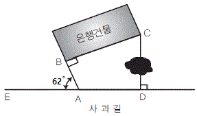
- 12.44m
- 12.30m
- 12.00m
- 11.23m
(정답률: 38%)
91. 일반적으로 주곡선의 등고선 간격을 결정하는데 가장 중요한 요소는?
- 도면의 축척
- 지역의 넓이
- 지형의 상태
- 내업에 필요한 시간
(정답률: 64%)
92. A, B의 표고가 각각 802m, 826m 이고 A, B의 도상수평거리가 30㎜일 때 A점으로부터 820m 등고선까지의 도상거리는?
- 20.6㎜
- 22.5㎜
- 24.0㎜
- 26.4㎜
(정답률: 42%)
93. 하천, 항만, 해양 등의 심천을 나타내는 데 측점에 숫자로 기입하여 고저를 표시하는 지형의 표시방법은?
- 점고법
- 영선법
- 음영법
- 등고선법
(정답률: 55%)
94. 그림과 같이 삼각형에서 A점과 B점의 좌표가 각각(1000m, 1000m), (1500m, 1400m)이고 a=1500.00m, b=1200.00m일 때, 삼변 측량을 위한 관측방정식으로 옳은 것은?
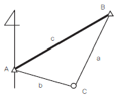
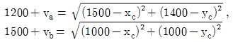
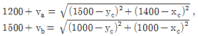
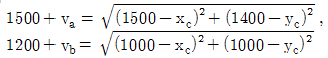
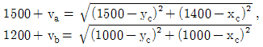
(정답률: 45%)
95. 국가공간정보에 관한 법률에서 다음과 같이 정의된 용어는?
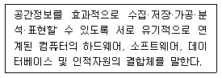
- 공간정보데이터베이스
- 공간정보체계
- 국가공간정보통합체계
- 공간객체
(정답률: 38%)
96. 측량·수로조사및지적에관한법률의 제정목적에 대한 설명으로 가장 적합한 것은?
- 국토의 효율적 관리와 해상교통의 안전 및 국민의 소유권 보호에 기여함
- 측량 및 수로조사의 기준 및 절차를 규정함
- 측량 및 수로조사와 지적측량에 관한 규칙을 정함
- 국토개발의 중복 배제와 경비 절감에 기여함
(정답률: 42%)
97. 주기적인 측량기본계획에 포함되어야 할 사항과 거리가 먼 것은?
- 측량에 관한 기본 구상 및 추진 전략
- 측량산업 및 기술인력 육성 방안
- 측량의 국내외 환경 분석 및 기술연구
- 세계측량기구의 가입 및 협력 방안
(정답률: 49%)
98. 기본측량성과를 국외로 반출이 불가능한 경우는?
- 축척 5백분의 1 이상의 대축척의 지도를 반출하는 경우
- 관광객 유치를 목적으로 측량용 사진을 제작하여 반출하는 경우
- 정부를 대표하여 국제회의 또는 국제기구에 참석자가 측량용 사진을 반출하는 경우
- 축척 2만 5천분의 1 지도로서 국가정보원장의 지원을 받아 모안성 검토를 거쳐서 반출하는 경우
(정답률: 59%)
99. 「측량기준점표지를 이전 또는 파손하거나 그 효용을 해치는 행위를 한 자」에 대한 벌칙 기준은?
- 1년 이하의 징역 또는 1천만원 이하의 벌금
- 2년 이하의 징역 또는 2천만원 이하의 벌금
- 3년 이하의 징역 또는 3천만원 이하의 벌금
- 300만원 이하의 과태료
(정답률: 45%)
100. 측량성과 심사수탁기관이 심사결과의 통지기간을 연장할 수 있는 경우에 해당되지 않는 것은?
- 성과심사 대상지역의 기상악화 및 천재지변 등으로 심사가 곤란할 때
- 지상현황측량, 수치지도 및 수치표고자료 등의 성과심사량이 면적 10제곱킬로미터 이상일 경우
- 수치지도 및 수치표고자료 등의 성과심사량이 노선 길이 100킬로미터에서 500킬로미터일 때
- 지하시설물도 및 수심측량의 심사량이 200킬로미터 이상일 때
(정답률: 27%)
UTM 좌표는 적도를 횡축으로, 측지선을 종축으로 한다는 것은 옳은 설명입니다. 이는 지구를 가상의 원통체로 투영하여 좌표를 나타내는 방식 중 하나인 UTM (Universal Transverse Mercator) 투영법의 특징입니다.
UTM 좌표는 경도를 6°간격으로 분할하여 사용하며, 80°N과 80°S간 전 지역의 지도는 UTM 좌표로 표시할 수 있습니다. 이는 UTM 좌표의 범위가 84°N부터 80°S까지이기 때문입니다.